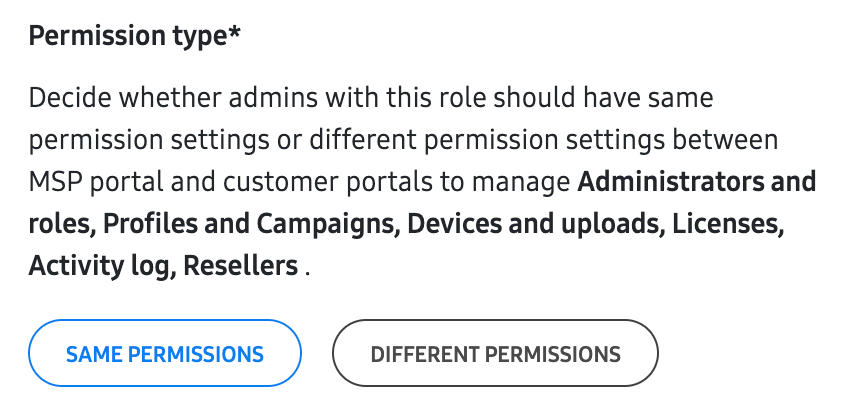

Manage roles
Last updated April 9th, 2025
Roles define what pages your admins can view, and what actions they can take on the MSP and customer portals. Before you can invite a sub-admin, you must first create an MSP portal role.
Create a role
To create a role:
-
On the left navigation pane, click Roles, then in the top-right, click CREATE ROLE.
-
On the Create role page, provide a name and description for the role in the BASIC INFORMATION field.
-
Under Permissions, choose whether you want to have the same permissions for both the MSP and Customer portals, or whether you want to manage permissions separately between each portal. Depending on the permission type selected, the available permission settings will vary.

-
(Optional) Select View only permissions if you want to disable all actions and set each permission to view-only.
-
In the right column, assign permissions for this role. See Role permissions to learn about each permission option.
-
Click SAVE to create the role and return to the Roles page.
Role permissions
Depending on the permission type selected on the Create role page, the available permission settings will vary.
Same permissions for both MSP and customer portals
If Same permissions for MSP portal and customer portals is selected, the following permissions are available:
COMMON PERMISSIONS
| Permission type | Options | Description |
|---|---|---|
| Customer | View only | Admins can view the Customers page on the MSP console, but they cannot add a new customer or make any changes. |
| Customer | Manage customer account > Add a new customer and edit customer information | Admins can add new customers to the MSP portal and make some changes to existing customer accounts. |
| Customer | Manage customer account > Delink customer | Admins can delink a customer on the MSP portal. |
| Administrators and roles | Invite and manage MSP administrators | Admins will have access to the Administrators page on the MSP Portal, allowing them to invite, deactivate, reactivate, and revoke other Admins. Allowing this permission gives the MSP admin the ability to delete, edit, or change permissions for other admins. Practice caution while giving these permissions. |
| Administrators and roles | Create and manage MSP roles | Admins will have access to the Roles page on the MSP Portal, allowing them to create, edit, and delete other roles. An admin with this permission can change their own role to include all permissions. |
| Profiles and campaigns | View only | Admins can view the Profiles page on the MSP Portal and on the Knox Configure and Knox Mobile Enrollment consoles, and the Campaigns page on the Knox E-FOTA console. |
| Profiles and campaigns | Manage profiles and campaigns | Admins can copy Profiles on the MSP Portal, create and edit Profiles in Knox Configure, and Knox Mobile Enrollment, and create and edit Campaigns in Knox E-FOTA. |
| Devices and uploads | View only | Admins can view the Devices page on the MSP and customer portals. |
| Devices and uploads | Manage devices | Admins can perform device actions and get access to the BULK ACTIONS tab on the Devices page on the MSP and customer portals, but they can’t delete devices. |
| Devices and uploads | Delete devices | Admins can also delete devices in addition to the actions allowed in the Manage devices permission. |
| Licenses | View only | Admins can view the Licenses page on the MSP and customer portals. |
| Licenses | Manage licenses | Admins can perform license actions like Get a license, Enter license key, and Replace a license on the MSP and customer portals. |
| Activity log | View activity log | Admins can view the Activity log page on the MSP and customer portals. If this permission is disabled, admins can still access the Activity log page from the console menu to view events that they trigger, but they won’t be able to view events triggered by any managed customers. |
| Resellers | View only | Admins can view the Resellers page on the MSP and customer portals. |
| Resellers | Manage resellers | Admins can register resellers and manage reseller preferences on the MSP and customer portals, but they can’t delete resellers. |
| Resellers | Delete resellers | Admins can also delete resellers in addition to the actions allowed in the Manage resellers permission. |
CUSTOMER PORTAL PERMISSIONS
| Permission type | Options | Description |
|---|---|---|
| Device users | View only | Admins can view the Device users page and download device users as a CSV file on the Knox Mobile Enrollment console. |
| Device users | Manage device users | Admins can add device users and edit passwords on the Knox Mobile Enrollment console. |
| Device users | Delete device users | Admins can also delete device users in addition to the actions allowed in the Manage device users permission. |
| Library | View only | Admins can view the Library page on the Knox Configure console. |
| Library | Manage library | Admins can add new mobile apps and perform app-related actions like Add app version, Update app in profile, and Download app. You must also enable the Manage devices and Manage profiles and campaigns permissions to enable all options. |
| Library | Delete library | Admins can also delete apps in addition to the actions allowed in the Manage library permission. |
| Dashboard | View only | Admins can view the Dashboard on the Knox E-FOTA console. |
| Dashboard | Manage dashboard view and data collection | Admins can perform actions on the Dashboard like Pin a campaign and Add a new chart. |
| EMM | View only | Admins can view the EMM groups page on the Knox E-FOTA console. |
| EMM | Manage EMM groups | Admins can add and edit EMM group information. |
| Services and Preferences | Manage default support information | Admins can modify the Default support information for Knox E-FOTA on the customer’s Knox Admin Portal account Settings page. Admins can still view the current support information. They just can’t modify the information unless this permission is granted. |
| Services and Preferences | Manage Privacy policy settings | Admins can modify the Privacy policy settings for Knox E-FOTA on the customer’s Knox Admin Portal account Settings page. Admins can still view the current privacy policy setting. They just can’t modify the policy unless this permission is granted. |
| Reporting | Manage reporting settings | Admins can modify the email alert settings for Knox Asset Intelligence in the Knox Admin Portal account Settings page. |
| Remote support session initiation | Manually start | Allow MSP admins to send a code to manually start a Knox Remote Support session. |
| Remote support session initiation | Automatically start | Allow MSP admins to automatically start a Knox Remote Support session without a code. |
| Remote support device control | View only | MSP admins can only view the device’s screen during a Knox Remote Support session. |
| Remote support device control | Manage device during session > Capture screen, record screen, and transfer files | MSP admins can capture the device user’s screen, record screens, and transfer files. |
| Remote support device control | Manage device during session > Control end-user devices remotel | MSP admins can control the device’s home screen menu, and have access to the power, volume, and rotate buttons. |
KNOX MANAGE PERMISSIONS
| Permission type | Options | Description |
|---|---|---|
| Knox Manage | View only | Admins have access to the customer’s Knox Manage console, but can’t make any changes. |
| Knox Manage | Full access | Admins have full access to the customer’s Knox Manage console, and can make changes to devices, apps, and policies. |
Different permissions for customer portals
If Different permissions for customer portals is selected, the following permissions are available:
MSP PORTAL PERMISSIONS
| Permission type | Options | Description |
|---|---|---|
| Customer | View only | Admins can view the Customers page on the MSP Portal, but they can’t add a new customer or make any changes. |
| Customer | Manage customer account > Add a new customer and edit customer information | Admins can add new customers to the MSP portal and make some changes to existing customer accounts. |
| Customer | Manage customer account > Delink customer. | Admins can delink a customer on the MSP portal. |
| Administrators and roles | Invite and manage MSP administrators | Admins will have access to the Administrators page on the MSP Portal, allowing them to invite, deactivate, reactivate, and revoke other admins. Allowing this permission gives the MSP admin the ability to delete, edit, or change permissions for other admins. Practice caution while giving these permissions. |
| Administrators and roles | Create and manage MSP roles | Admins will have access to the Roles page on the MSP Portal, allowing them to create, edit, and delete other roles. An admin with this permission can change their own role to include all permissions. |
| Profiles | View only | Admins can view the Profiles page on the MSP portal. |
| Profiles | Manage profiles | Admins can copy Profiles on the MSP portal. |
| Devices and uploads | View only | Admins can view the Devices page on the MSP portal. |
| Devices and uploads | Manage devices | Admins can perform device actions and get access to the BULK ACTIONS tab on the MSP Portal Devices page, but they can’t delete devices. |
| Devices and uploads | Delete devices | Admins can also delete devices in addition to the actions allowed in the Manage devices permission. |
| Licenses | View only | Admins can view the Licenses page on the MSP portal. |
| Licenses | Manage licenses | Admins can perform license actions like Get a license, Enter license key, and Replace a license on the MSP portal. |
| Activity log | View activity log | Admins can view the Activity log page on the MSP portal. |
| Resellers | View only | Admins can view the Resellers page on the MSP portal. |
| Resellers | Manage resellers | Admins can register resellers and manage reseller preferences on the MSP portal, but they can’t delete resellers. |
| Resellers | Delete resellers | Admins can also delete resellers in addition to the actions allowed in the Manage resellers permission. |
CUSTOMER PORTAL PERMISSIONS
| Permission type | Options | Description |
|---|---|---|
| Profiles and campaigns | View only | Admins can view the Profiles page in Knox Configure and Knox Mobile Enrollment, and the Campaigns page in Knox E-FOTA. |
| Profiles and campaigns | Manage profiles and campaigns | Admins can create and edit Profiles in Knox Configure and Knox Mobile Enrollment, and Campaigns in Knox E-FOTA. |
| Profiles and campaigns | Delete profiles and campaigns | Admins can also delete profiles and campaigns in addition to the actions allowed in the Manage profiles and campaigns permission. |
| Devices and uploads | View only | Admins can view the Devices page on customer consoles. |
| Devices and uploads | Manage devices | Admins can perform device actions and get access to the BULK ACTIONS tab on the Devices page on customer consoles, but they can’t delete devices. |
| Devices and uploads | Delete devices | Admins can also delete devices in addition to the actions allowed in the Manage devices permission. |
| Licenses | View only | Admins can view the License page on customer consoles. |
| Licenses | Manage licenses | Admins can perform license actions like Get a license, Enter license key, and Replace a license on customer consoles. |
| Licenses | Delete licenses | Admins can also delete licenses in addition to the actions allowed in the Manage licenses permission. |
| Activity log | View activity log | Admins can view the Activity log page customer portals. |
| Resellers | View only | Admins can view the Resellers page on the customer portals. |
| Resellers | Manage resellers | Admins can register resellers and manage reseller preferences on the customer portals, but they can’t delete resellers. |
| Resellers | Delete resellers | Admins can also delete resellers in addition to the actions allowed in the Manage resellers permission. |
| Device users | View only | Admins can view the Device users page and download device users as a CSV file on the Knox Mobile Enrollment console. |
| Device users | Manage device users | Admins can add device users and edit passwords on the Knox Mobile Enrollment console. |
| Device users | Delete device users | Admins can also delete device users in addition to the actions allowed in the Manage device users permission. |
| Library | View only | Admins can view the Library page on the Knox Configure console. |
| Library | Manage library | Admins can add new mobile apps and perform app-related actions like Add app version, Update app in profile, and Download app. You must also enable the Manage devices and Manage profiles and campaigns permissions to enable all options. |
| Library | Delete library | Admins can also delete apps in addition to the actions allowed in the Manage library permission. |
| Dashboard | View only | Admins can view the Dashboard on the Knox E-FOTA console. |
| Dashboard | Manage dashboard view and data collection | Admins can perform actions like Pin a campaign and Add a new chart. |
| EMM | View only | Admins can view the EMM groups page on the Knox E-FOTA console. |
| EMM | Manage EMM groups | Admins can add and edit EMM group information. |
| Services and Preferences | Manage default support information | Admins can modify the Default support information for Knox E-FOTA in the Knox Admin Portal account Settings page. Admins can still view the current support information. They just can’t modify the information unless this permission is granted. |
| Services and Preferences | Manage Privacy policy settings | Admins can modify the Privacy policy settings for Knox E-FOTA in the customeer’s Knox Admin Portal account Settings page. Admins can still view the current privacy policy setting. They just can’t modify the policy unless this permission is granted. |
| Reporting | Manage reporting settings | Admins can modify the email alert settings for Knox Asset Intelligence in the Knox Admin Portal account Settings page. |
| Remote support session initiation | Manually start | Allow MSP admins to send a code to manually start a Knox Remote Support session. |
| Remote support session initiation | Automatically start | Allow MSP admins to automatically start a Knox Remote Support session without a code. |
| Remote support device control | View only | MSP admins can only view the device’s screen during a Knox Remote Support session. |
| Remote support device control | Manage device during session > Capture screen, record screen, and transfer files | MSP admins can capture the device user’s screen, record screens, and transfer files. |
| Remote support device control | Manage device during session > Control end-user devices remotel | MSP admins can control the device’s home screen menu, and have access to the power, volume, and rotate buttons. |
KNOX MANAGE PERMISSIONS
| Permission type | Options | Description |
|---|---|---|
| Knox Manage | View only | Admins have access to the customer’s Knox Manage console, but can’t make any changes. |
| Knox Manage | Full access | Admins have full access to the customer’s Knox Manage console, and can make changes to devices, apps, and policies. |
Edit or delete roles
To edit or delete a role:
- On the Roles page, click the role that you want to edit or delete. The Edit role page appears.
- To edit a role, make your changes then click SAVE.
- To delete a role, click DELETE, then click OK on the confirmation dialogue.
On this page
Is this page helpful?